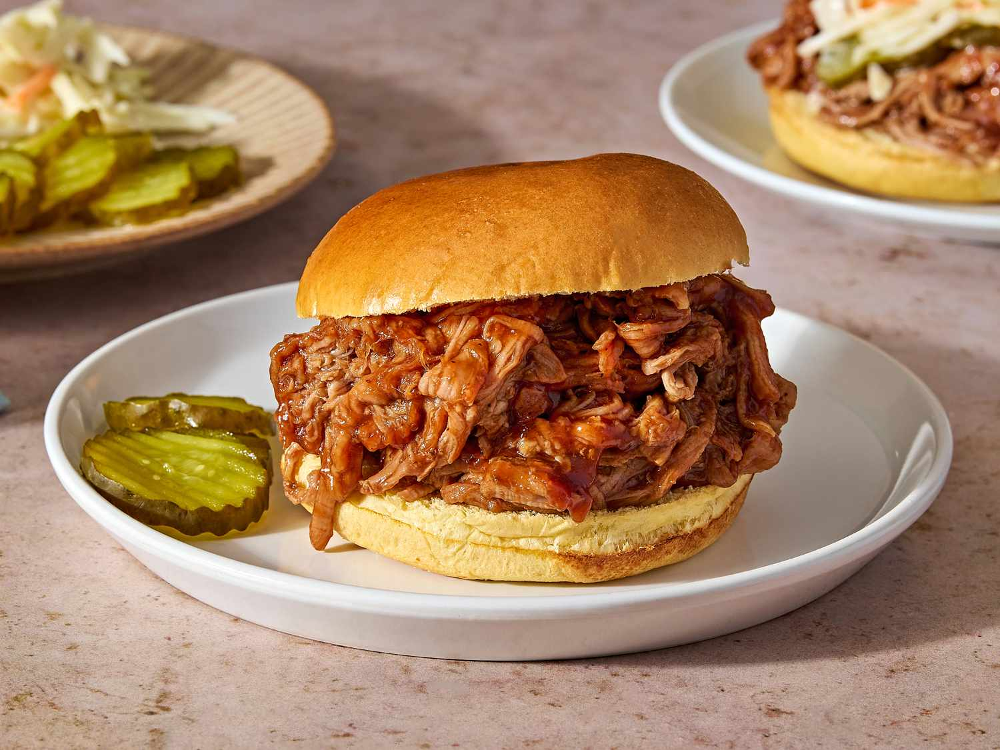

Slow Cooker Pulled Pork Recipe

Description
Pulled pork is an American barbecue dish, based on shredded barbecued pork shoulder. It may be served on bread as a sandwich or eaten on its own.
This is an easy pulled pork recipe that involves slow cooking the meat. Root beer and pulled pork might not seem like a likely pairing but here it makes all the difference. You'll find a detailed ingredient list and step-by-step instructions in the recipe below
Ingredients
- Pork: 1 (2 pound) pork tenderloin
- Root beer: 1 (12 fluid ounce) can or bottle of root beer.
- Barbecue sauce: 1 (18 ounce) bottle of your favorite barbecue sauce.
- Hamburger buns: 8 hamburger buns, split and lightly toasted.
Steps
- Gather the ingredients
- Place pork tenderloin in a slow cooker; pour root beer over the top.
- Cover and cook on low until pork shreds easily, 6 to 7 hours. Note: the actual length of time may vary according to the individual slow cooker.
- Drain well. Stir in the barbecue sauce.
- Serve on hamburger buns.
- Serve and enjoy!.